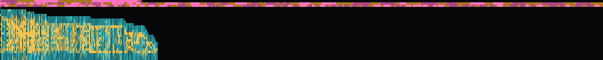
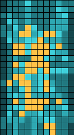
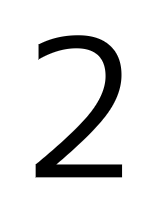
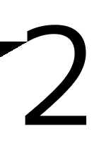

1全体の流れ
Rinkaku は T2Font の 4 区画（Core・Bake・Runtime・Editor）に派生クラスを置くだけで、ホスト（TextGlyph・検証ビュー T2FontText）は SDF と同じ道を通る。違うのはベイクが書くデータの中身と、フラグメントシェーダが距離を求める手順だけである。ベイク仕様に "kind": "rinkaku" を書けば、T2Font のインポーターがこのパッケージのベイカーでベイクする。
| 段 | コード | 正典 |
|---|---|---|
| 和集合輪郭 | Bake/OutlineUnion.cs | README §4.1 |
| セグメントテーブル | Bake/GlyphEncoder.cs | README §3.2・§4.2 |
| グリッド | Bake/NearestIndex.cs | README §3.3・§4.3 |
| ページへの配置 | Bake/RinkakuAtlasBaker.cs | README §3.1・§4.4 |
| グリフ表現（quad と UV0） | Runtime/RinkakuRepresentation.cs | README §3.4 |
| シェーダ | Shaders/Rinkaku.shader・Shaders/RinkakuDistance.hlsl | README §3.5 |
| 読み戻し（倍精度の参照） | Bake/RinkakuDecoder.cs | README §3 |
2SDF の角が丸くなる理由
Rinkaku の形は、SDF が苦手なことの裏返しになっている。まず SDF がどこで形を失うかを、実際の SDF（T2Font の em48・R8）で見る。
2.1SDF が持つもの
SDF のアトラスが持つのは、texel の中心での符号付き距離だけである。em48 なら texel の間隔は 1/48em で、値は ±0.1875em を 8bit（1 段 0.0015em）に量子化して書く。輪郭の形そのもの（セグメントの端・角の位置）は持たない。シェーダは画素の位置での距離を、まわりの texel の値から作り直して使う。
2.24 つの texel を混ぜて戻す
作り直しはテクスチャの bilinear で、画素のまわりの 4 つの texel の値を、位置で重みを付けて混ぜる。距離が直線的に変わる所（まっすぐな縁の近く）なら、混ぜた値は真の距離に一致する。ところが角の近くの真の距離は直線的でない。インクの内側では 2 つの辺への距離の小さい方（角の二等分線に折れ目がある）、外側では角の頂点からの距離（同心円）になる。4 つの値を混ぜるだけではこの折れ目を作れないので、作り直した距離の 0 の等値線（字の縁）は、角のまわり 1 texel ほどの範囲で角を丸く削る（図 2 の右）。一方、縁取りの外縁（−0.08em の等値線）は角の外にあり、そこでの真の距離は頂点からの同心円で滑らかなので、bilinear でもおおむね戻る（texel のグリッドに沿ったわずかな歪みが残る）。SDF が失うのは、距離が折れる所——凸の角の内側と、狭い隙間（§2.4）——の形である。
2.3拡大すると丸みも大きくなる
丸みの大きさは texel の大きさで決まり、表示の大きさでは決まらない。em48 の 1 texel は 48px の表示で 1px、192px で 4px、384px で 8px になるので、大きく表示するほど丸みも画素で大きくなる。図 3 は同じ角を 384px で描いたもの。SDF は角が丸く削れ（理想との差 最大 0.62）、まっすぐな縁にも量子化とベイクの近似の差が細く残る。Rinkaku の差は角の画素だけ（最大 0.2）で、これは距離の 1px のランプと画素の面積が角で食い違う分（SDF と同じ意味の距離を使う限り残る・§7.5）。縁取りの外縁でも SDF の差は最大 0.25、Rinkaku は 0.05 だった。
2.4画の密な字
もう 1 つの弱点は、画と画の隙間が texel より狭い字である。隙間の中央では、両側の画への距離がつり合う所（尾根）で距離が最大になる。隙間が 1〜2 texel しかないと、texel の中心の値がこの尾根をとらえられず、作り直した距離は隙間の中でも正のまま残る。その結果、隙間が埋まって画がにじむ。拡大しても texel の数は増えないので、にじみはそのまま大きくなる。
MAE 0.0188・0.25 超 8 画素
MAE 0.0107・0.25 超 2 画素
MAE 0.0269・0.25 超 503 画素
MAE 0.0025・0.25 超 3 画素
MAE 0.0258・0.25 超 1187 画素
MAE 0.002・0.25 超 2 画素
2.5Rinkaku の方法
SDF の弱点は、どちらも「距離を texel の点でしか持たない」ことから来る。Rinkaku は距離を持たず、輪郭のセグメントそのもの（2 次ベジエ）を持ち、画素ごとに真の距離を解く。距離が厳密なので、0 の等値線は輪郭そのもの（角は折れたまま）で、−0.08em の等値線は真の外縁（角は半径 0.08em の円弧）になる。距離は SDF と同じ意味（em・インクの側が正）なので、エッジスタイルの式も T2Font の SDF のシェーダとそのまま同じにできる。
代わりに、画素ごとの計算が重くなる。字の全セグメント（漢字で 30〜200 本）を画素ごとに解くのは現実的でないので、ベイクのときに「この辺りで最も近くなりうるセグメント」を 1/16em のグリッドセルごとに書いておき（最近傍インデックス・§5）、シェーダはセルに書かれたセグメント（たいてい 1〜4 本）だけを解く。データ量はセグメントテーブルとインデックスの和で、漢字の平均は SDF em48 の R8 の約 1/4〜2/5（§8）。
- SDF: 距離をグリッドの点で持つ → 読むのは 1 回（bilinear）・形はグリッドの細かさまで。
- Rinkaku: 曲線と「どの曲線が近いか」のインデックスを持つ → 読みと計算は多い・形は表示の大きさに依らず厳密。
3和集合輪郭
TrueType の字は、輪郭どうしが重なったり、向きが逆だったりすることがある。塗りは非ゼロ巻き数なので見た目は正しいが、輪郭をそのまま距離の計算に使うと、重なりの内側を通る辺への距離が小さくなり、インクの中に縁取りの筋が出る。そこでベイカーは、まず非ゼロ巻き数で塗った領域の境界だけを残すように輪郭を作り直す（和集合輪郭）。喙 は元の輪郭 7 本が、和集合輪郭 6 本になる。
- 座標が一致する端点は、輪郭をまたいで 1 つの頂点にする。
- セグメントどうしの交点を求め（制御点の箱で 2 分して絞り、弦で交わる所を Newton 法で詰める）、交点でセグメントを分ける。
- 分けた片の中点の左右の点で元の全セグメントの巻き数を数え、片側だけが塗られる片を残し、塗る側を右手へ向ける。
- 頂点で片を繋いで閉じた鎖にする。繋げない字はインポートの失敗にして字を名指す（黙って生の輪郭を使わない）。
4セグメントテーブル
和集合輪郭は、グリフごとに連続した項目の列（セグメントテーブル）に書く。項目 1 つ＝texel 2 つ＝8 バイトで、セグメント i は項目 i の始点と制御点、項目 i+1 の始点（＝セグメント i の終点）でできる。輪郭の終わりには、輪郭の始点と擬似法線だけを持つ終端の項目を置いて閉じる。
| バイト | 中身 | 精度 |
|---|---|---|
| 0・1 | 始点の x（16bit・下位が先）＝(x + 1) × 16384 | −1〜3em を 1/16384em |
| 2・3 | 始点の y（同じ） | 同じ |
| 4・5 の下位 4bit | 制御点の始点からの差 dx（符号付き 12bit）＝dx × 4096 | ±0.5em を 1/4096em |
| 5 の上位 4bit・6 | 制御点の差 dy（同じ） | 同じ |
| 7 | 始点での擬似法線の角度（8bit）＝角度 / 2π × 256 | 1.4° の段 |
- 直線は制御点の差を 0 にする: 直線は制御点の差を (0, 0) にして書き、これを直線の印にする（形式のビットを使わない）。シェーダはこの項目を三次方程式で解かずに正射影で測る（§7.3）。制御点が始点に重なる 2 次ベジエは線分そのものなので、量子化で差が 0 になった曲線がこの印を持っても距離は同じ。弦からのずれが 1/4096em 以下の曲線は直線として書く。
- 擬似法線: 頂点（セグメントの端）で 2 つのセグメントの外向きの法線を足して正規化した向き。点に最も近いのが頂点のとき、内か外かはこの向きで決める（§7.4）。8bit で持つので 1.4° の段になる。
見本（検査用のベイク仕様）の 永 のセグメントテーブルの先頭の項目は次のとおり。番地はページの texel の座標（x, y）。項目 0〜3 が最初の輪郭の 4 セグメント（項目 1・3 は曲線、0・2 は制御点の差が 0 の直線）、項目 4 はその輪郭を閉じる終端の項目（始点は項目 0 と同じ・制御点の差は 0）で、項目 5 から次の輪郭が始まる。
| 項目 | texel | 8 バイト | 始点（em） | 制御点の差（em） | 擬似法線 |
|---|---|---|---|---|---|
| 0 | 3348, 24 | 06 51 42 70 00 00 00 18 | (0.266, 0.754) | (0, 0) | 24 → (0.831, 0.556) |
| 1 | 3350, 24 | 2D 52 7B 74 44 D3 F8 D8 | (0.284, 0.82) | (0.2041, -0.0281) | 216 → (0.556, -0.831) |
| 2 | 3352, 24 | 9C 6C 66 6E 00 00 00 93 | (0.697, 0.725) | (0, 0) | 147 → (-0.893, -0.45) |
| 3 | 3354, 24 | 12 6B 2D 6A C9 AC 10 53 | (0.673, 0.659) | (-0.2009, 0.0649) | 83 → (-0.45, 0.893) |
| 4 | 3356, 24 | 06 51 42 70 00 00 00 18 | (0.266, 0.754) | (0, 0) | 24 → (0.831, 0.556) |
| 5 | 3358, 24 | 35 5E E1 42 00 00 00 00 | (0.472, 0.045) | (0, 0) | 0 → (1, 0) |
5最近傍インデックス
シェーダが画素ごとに解くセグメントを絞るため、ベイカーはグリフの quad を 1/16em（indexEm 16）のセルに分け、そのセルの中のどこかで最も近くなるセグメントだけをセルに書く。永（M+ 1c）はセグメント 33 本（項目 36 個）に対し、セルは 484 個で、セルに書いたセグメントの数は 1 本 249・2 本 176・3 本 47・4 本 11・5 本 1（平均 1.63 本・最大 5 本）。データ量は 1,568 バイト（インデックス 264 texel・セグメントテーブルとレコードの並び 128 texel）。
インデックスの作り方（README §4.3）:
- セルの中心から各セグメントへの距離を求め、最小の距離＋セルの対角の長さを超えるセグメントを外す（距離は 1-Lipschitz なので、外したセグメントがセルの中で最も近くなることは無い）。セグメントの制御点の箱までの距離はセグメントまでの距離の下限なので、下限で明らかに遠いセグメントは厳密な距離を解かずに外す。
- 残りが 2 本以上なら、まずセルの中を通るセグメントを入れる（その上の点で距離 0 の最近傍になるので必ず要る）。次にセルの面積を 7×7 でサンプリングし、隣り合うサンプルで最近傍が変わる所を 4 段まで 2 分して詰め、見つけた最近傍を書く。
- 書く順は曲線が先・直線が後で、それぞれの中はセルの中心に近い順。曲線を先に置くと、ウェーブ（8×8 画素）の中で曲線を解く回が前に揃い、重い曲線の手順を通るループの回数が減る。
1 の集合は「セルの中で最も近くなるセグメント」を必ず含む大きめの集合（上位集合）で、2 はその中から本当に最も近くなるものをサンプリングで拾う。上位集合・必要集合の意味、2 分の条件、落としうる所と距離の誤差の上界、区間演算で上位集合を作る先行研究との違いは 02 章「Rinkaku の必要集合の作り方」。
セルはセグメントの番号 2 つ（8bit×2・0 は空き）で、texel 1 つにセル 2 つを詰める（偶数のセルが前半の 2 バイト・奇数のセルが後半の 2 バイト）。セルの 7〜8 割はセグメントが 2 本以下なので、ほとんどの画素はこの読み 1 回で番号が揃う。3 本以上のセルは (レコードまでの後ろ向きの差の下の桁, 印) と書き、レコード（セグメントテーブルの直前に置く）を 1 回読む。短いレコードは texel 1 つに番号 4 つ（3 本か 4 本）、長いレコードは [セグメントの数, 番号, …]（5 本以上）。印は 252〜255 の 4 つで、短いか長いかと、後ろ向きの差の上の桁（0 か 1）を持つ——レコードの並びは 511 texel まで届く。同じ内容のレコードは字の中で 1 つにまとめる。番号が 251 を超える字（セグメントの多い字）は、そのグリフだけワイドインデックス（texel 1 つにセル 1 つ・16bit の番号を 2 つ）にする。CJK 統合漢字では IPAex 明朝の「麤」が当たる。
6ページと UV0
ページは RGBA8・非圧縮・point・linear・ミップ無しのデータテクスチャ 1 枚で、幅は常に 4096 texel、高さは中身で決まる（上限は maxPageSize）。下の行からインデックスブロックを棚詰めし（高い順）、その上の行からセグメントテーブルとレコードの並びを線形に並べる。セグメントテーブルは線形の番地 a = y × 4096 + x で引くので（< 224 なので float で正確に持てる）、シェーダはページの高さを知らずに番地を 2 次元へ直せる。見本のページは 4096×26 で、インデックスブロックが下の 23 行、セグメントテーブルが行 23 から。


グリフ表現 RinkakuRepresentation は、グリフごとに quad を 1 つ書き、UV0.xy に 2 つの整数を float で詰める（4 頂点で同じ・補間すると丸めで 1 ずれうるので nointerpolation で受ける）。
- UV0.x＝インデックスのずれ K
- セル (cx, cy) の texel は
(cx >> 1, cy) + K（ナローインデックス。前半か後半かはcx & 1）、ワイドインデックスは(cx, cy) + K。K は x を 13bit・y を 11bit に、64 を足して詰める - UV0.y＝dataBase
- セグメントテーブルの先頭の線形の番地。ワイドインデックスのグリフは負にして印にする
- UV0.zw＝em 座標
- その頂点の em 座標（ペン原点から）。画素ではこれが補間され、セルを引くのと距離を測るのに使う
マテリアルの _IndexEm にはフォントの indexEm を載せる（ConfigureMaterial）ので、マテリアルを共有してよい範囲（MaterialScope）はグリフ表現自身＝フォントごと。テクスチャもフォントの境で替わるので、バッチの割れ方は SDF と同じ。
7シェーダ
シェーダ Rinkaku/Glyph（#pragma target 3.5）の頂点シェーダと、面と縁取りの合成（T2Font の契約 S1〜S9）は SDF のシェーダと同じで、距離を求める手順だけが違う。手順は Shaders/RinkakuDistance.hlsl にあり、グリフ表現のシェーダと、GPU の途中の値を読む計測のシェーダ（§9.2）が同じ手順を取り込む。
7.1セルを引く
画素の em 座標から cell = floor(em × _IndexEm) を求め、(cell.x × 横の texel 数, cell.y) + K の texel を Load（整数の番地で読む）で読む。UV で引かないので、ページの高さを知らずに済み、UV の丸めで隣の texel を引くこともない。グリッドはインク境界より 0.15em＋AA の半分だけ広い範囲を覆い、quad はホストが渡す幅（エッジスタイルの外延＋1 画素）までそれを狭めた形なので、画素が引くセルはいつもグリッドの中にある。
7.2セグメントを全部解く
セグメントごとに項目の 3 texel（始点・制御点の差・次の項目の始点＝終点）を読む。セルのセグメントは全部解く。2 次ベジエは 3 点の凸包に収まるので、3 点の AABB までの距離はセグメントまでの距離の下限になり、それが今の最短より遠いセグメントを解かずに飛ばす検査を置ける。Rinkaku 0.2.0 まではこの検査を置いていたが、セルのセグメントを曲線が先に並べる形（出力のバージョン 4・§5）にした後は、近い直線から上限を得るのが遅れて検査が効かなくなり、検査の分岐とループの制御の費用の方が大きくなったので、0.2.1 で検査をやめた（統合 GPU の 40px 以上で 2〜11% 速い。24px の明朝の画の密な字は 1% ほど遅い。値は README §7）。
7.3閉形式と Newton 法
直線（制御点の差が 0 の項目）は、始点からの正射影の t を [0, 1] に丸めて最も近い点を求め、丸めたかで端かどうかを決める（三次方程式を解かない）。曲線については次のとおり。点から 2 次ベジエへの距離の二乗は t の 4 次式で、その極値は 3 次方程式の根になる。シェーダは根を閉形式（判別式の符号で実根 1 つの式と 3 つの式を使い分ける）で求め、[0, 1] に収め、Newton 法の 1 反復でリファインする（ほぼ直線の長い曲線で係数が大きくなり、float の桁落ちが t に出るのを抑える）。その後、両端の距離も必ず比べ、同じ近さ（1e−6em の幅の中）なら端を選ぶ。閉形式の根は GPU の精度（acos・pow の近似、掛け算と足し算のまとめ方）で端からわずかにずれうるので、端かどうかを根に頼らずに決めるため。3 次方程式の導き方・閉形式の 2 つの枝・単精度の桁落ちと Newton 法の効き目は 03 章「Rinkaku の距離の解き方」。
7.4端点と擬似法線
最も近い点がセグメントの途中にあるなら、内か外かはその点の接線の右手の法線で決まる（塗る側は進行方向の右手）。最も近い点がセグメントの端（頂点）なら、接線の法線では決められない。頂点が最も近くなる点は、頂点から扇形（楔）に広がる領域にあり、鋭い角では楔の一部がセグメントの延長線の「内側」に入るからである。そこで端のときは、頂点の擬似法線（2 つのセグメントの外向きの法線の和の向き）で決める。
インクの鋭い角 V。V が最も近くなる点は、A と B の外向きの法線の間の楔（薄い青緑とマゼンタ）にある。楔の中の点 P で、A の終点（t = 1）を接線の法線で判定すると、P は A の延長線の右手（インクの側）にあるので「内」になる。正しくは外で、擬似法線で判定すれば外になる。誤る所はマゼンタの扇形——A の延長線と B の法線の間——で、画面では角から外へ伸びる楔や細い線になる（§9.1）。角が鋭いほど扇形は広い。凹んだ角では向きが逆になり、インクの中に三角の穴が開く。
7.5SDF と同じ式で塗る
得た符号付き距離 s から先は T2Font の SDF のシェーダと同じで、2 つの境界（面の縁と縁取りの外縁）に位置とぼかしを 1 つずつ持たせ、ランプを境界の中央に置く。emPerPx は UV0.zw の微分から得た画面 1px の em。
faceEdge = −_FaceDilate
ao = saturate((s − outerEdge) / (emPerPx + _OutlineSoftness) + 0.5)
af = min(saturate((s − faceEdge) / (emPerPx + _FaceSoftness) + 0.5), ao)
距離が SDF と同じ意味なので、エッジスタイルの値（太らせ −0.03〜0.04em・面と外縁のぼかし 0〜0.06em・縁取り 0〜0.08em）は SDF と同じ太さに効く。SDF は距離レンジ（±0.1875em）の外で距離が飽和するが、Rinkaku は quad の中ならどこでも厳密。代わりに、距離の 1px のランプは角で画素の面積と食い違う（図 3 の Rinkaku の差の画素）。
8比べた結果
数値の正典はパッケージ Rinkaku の README §7。ここではグラフで見る。
被覆の誤差
同じ字（M+ 1c のあ・永・鬱・■、IPAex 明朝の永・鬱、M+ 2p heavy の喙）を同じ大きさで、Rinkaku と SDF（em48）で描き、理想の被覆と画素ごとに比べた平均（MAE）。Rinkaku は大きくするほど誤差が減り、SDF は大きさに依らず横ばいになる——SDF の誤差は texel のグリッドから来るので、拡大しても減らない。
- Rinkaku
- SDF（em48・R8）
| px | 面 MAE Rinkaku／SDF | 面の誤差 0.25 超の画素 | 外縁 MAE | 外縁の誤差 0.25 超の画素 |
|---|---|---|---|---|
| 40 | 0.0049／0.0087 | 8／22 | 0.0022／0.0031 | 7／2 |
| 48 | 0.0039／0.0108 | 14／169 | 0.0018／0.0035 | 5／14 |
| 64 | 0.0028／0.0094 | 12／308 | 0.0014／0.0033 | 13／34 |
| 128 | 0.0012／0.0092 | 8／1544 | 0.0006／0.0035 | 7／324 |
| 192 | 0.0008／0.0090 | 3／3497 | 0.0004／0.0035 | 13／1229 |
データ量
開発用の文字セット（約 6,400〜8,000 字）を全字ベイクしたときの漢字 1 字の平均と、同じ文字セットを SDF em48 でベイクしたときの 1 字の大きさ（SDF のセルは全字が同じ大きさ）。漢字の平均は 4 書体とも SDF em48 の BC4（4bit の圧縮）を下回る。
| 書体 | Rinkaku 漢字の平均（p95） | SDF em48 R8 | SDF em48 BC4 |
|---|---|---|---|
| M+ 1c | 1,999 B（2,644） | 7,392 B | 3,696 B |
| M+ 2p heavy | 2,035 B（2,684） | 8,448 B | 4,224 B |
| IPAex ゴシック | 1,997 B（2,640） | 5,760 B | 2,880 B |
| IPAex 明朝 | 2,306 B（3,080） | 5,760 B | 2,880 B |
描画の時間
1920×1080 に字を全角送りで敷き詰めた 1 回の描画の GPU の時間（統合 GPU・AMD Radeon Graphics・D3D11）。SDF は字の形に依らないので本文の字だけで、Rinkaku は M+ 1c の本文の字（ゴシック）と、IPAex 明朝のデータ量の大きい上から 40 字（明朝の密な字）で測った。時間は字の数より画素の数で決まり、同じ quad で Rinkaku は画素あたり SDF の 5〜21 倍かかる（2 つの GPU・README §7）。
- SDF
- Rinkaku ゴシック（本文の字）
- Rinkaku 明朝の密な字
本文に使えるかは、はじめ SDF との比で決めていた（D-RINKAKU 追記「RK-4」決定 5・「RK-5」決定 3）が、比は手法で決まり字の数では動かないので外し、運用の画面ごとに、統合 GPU で本文の描画が 4ms 以内なら、その画面の本文に Rinkaku を使えるとした（D-RINKAKU 追記「本文に使う条件を運用の画面で置き換え、公開の順序と範囲を決める（RK-11）」）。運用の画面は、通常画面（30 字×3 行＝90 字）と、バックログのうち 1 画面に見える行（40px で 18 行＝540 字・48px で 15 行＝450 字）。ホストが描くのはエッジスタイルの外延まで狭めた quad で（§7.1）、統合 GPU のゴシックは 40・48px のどの画面も、どのエッジスタイルでも 4ms に収まる——48px のバックログの画面は縁取り（外延 0.08em）で 3.26ms・全効果の外延で 3.77ms、通常画面は縁取りで 40px 0.49ms・48px 0.65ms（README §7 の狭めた quad の表・D-RINKAKU 追記「RK-13 を入れた後の測り直しと、Rinkaku 0.2.1」）。見出し・字の拡大演出のような大きな字では、SDF との比も小さい（128px で 5〜10 倍）。
9開発で得た知見
着手候補 67（D-RINKAKU・RK-0〜RK-13）の開発で分かったことのうち、構造を読むときに知っておくべきもの。経緯の正典は docs/archive/decisions.md の D-RINKAKU とその追記。
9.1GPU で t ≥ 1 の枝が通らない
依頼者の目視（192px）で、鋭い角の先から伸びる楔・細い線と、画の接合部の三角の穴が出た。当時のシェーダは、セグメントごとに t を求め、呼ぶ側で if (t <= 0.0) 始点の擬似法線 / else if (t >= 1.0) 終点の擬似法線 / else 接線の法線 と分けていた。GPU（D3D11・NVIDIA GeForce RTX 5070 Ti）の上では、t がちょうど 1.0 なのに t >= 1.0 の枝が通らず、終点を接線の法線で判定していた（t <= 0.0 の枝は通る）。図 9 の扇形がそのまま字の外に出る。


- CPU では再現しなかった: シェーダの手順を写した単精度のモデル（acos の多項式近似・立方根の exp2(log2)・掛け算と足し算の 1 回の丸めまで真似たもの）でも、全画素の符号は正しかった。最初は「閉形式の根が端からわずかにずれる」と見て両端を必ず比べる直しを入れたが、症状は消えなかった。
- 突き止め方: GPU の途中の値を読む計測（§9.2）で、食い違う画素のどれも「終点を選んだ（印 16）・t = 1」なのに、符号を決めた法線の長さが 1 でない（接線の法線）ことが分かった。モデルで
t >= 1をt > 1に変えると、GPU の食い違いの画素の数が字ごとにほぼそのまま出た（M+ 1c の t 271／271・永 214／216・あ 14／13・赤 90／91、M+ 2p heavy の 永 358／365・喙 613／596・椽 1472／1424・掾 731／724）。 - 直し: 端を選んだことを、端を選んだ枝の中で整数に書き（GPU で通ると計測で確かめた枝）、ループの後でその整数で擬似法線を読む。後から t を 0・1 と比べて決め直さない。コンパイラ（FXC）と driver のどちらが原因かは特定していない。直した後は、RTX 5070 Ti と統合 GPU（AMD Radeon Graphics）の両方で、GPU の描画は参照と画素ごとに一致する（エッジスタイルの値域の端 7 組・18 字で食い違い 0）。
シェーダで float の値を境界と比べて分岐を決め直す書き方（t >= 1.0 など）は、CPU のモデルが正しくても GPU で崩れうる。判定は、その状態を作った枝の中で整数に書いて運ぶ。
9.2GPU の途中の値を読む
手元の GPU でしか出ない食い違いは、CPU のモデルでは原因に届かない。そこで距離の手順を RinkakuDistance.hlsl に分け、グリフ表現のシェーダと、計測のシェーダ Assets/Tests/EditMode/T2Font/RinkakuTrace.shader が同じ include を取り込むようにした。RinkakuSignedDistance は途中の値を RinkakuTrace（最も近いセグメント・閉形式と Newton の後の t・両端の距離・印・符号を決めた法線・セルの texel・先頭 4 本の距離）に書き、グリフ表現のシェーダは読まないのでコンパイラが消す。
EditMode の RinkakuGpuDiagnosticTests は、①インポートしたページのバイトを GPU から読み戻して、ベイクし直した出力と比べ、②字を描いた面と全体の α を、倍精度の参照の距離から同じ式で求めた値と画素ごとに比べる（面を白・縁取りを緑で描き、RT の r と a に分ける）。食い違った画素には、計測のシェーダを float の RT へ描いて読んだ途中の値を添え、Temp/RinkakuDiagnostics/ に文面と画像を書く。依頼者はこのファイルを渡すだけでよい。
9.3include での再宣言
直しの途中で、RinkakuDistance.hlsl の関数の中で Newton 法の段の tangent を宣言し直し、D3D11 のコンパイルが redefinition of 'tangent' で落ちた。Job A はシェーダをコンパイルせず、Job B は PR でしか回らないので、依頼者の手元で初めて出た。glslang（glslang-tools）の HLSL の前段は、Unity の include を簡易な代用に差し替えれば同じ誤りを同じ行で拾う。Job A へ足す作業は roadmap の小物 6。
9.4何が重いかは数えても分からない
最適化を 1 段入れた（擬似法線の cos・sin をセグメントごとから 1 画素 1 回へ・セグメントごとの読みを 4 texel から 3 texel へ・AABB で遠いセグメントを飛ばす・セルのセグメントを中心に近い順に書く。このうち AABB の検査は後に外し（§7.2）、並びは曲線を先にする形に替えた（§5）。以下はその当時の計測）。単精度のモデルでは、8×8 画素のウェーブで解く本数の最大の平均がゴシック 24px で 3.38→2.54、明朝の密な字で 5.94→3.60 に減ったが、時間の縮みは 3〜17% にとどまった。そこで「texel の読みの待ちが重い」と見て、先頭 4 本のセグメントの texel を解く前にまとめて読む形（先読み）を試した。ウェーブの依存する読みの回数はゴシック 24px で約 6 回から 2.5 回、明朝の密な字で約 13 回から 5 回に減るが、時間は 2 つの GPU とも ±2.4% の中で変わらず、本文のゴシックではわずかに遅くなった（4 本に満たないセルでも 16 texel を読むため）。読みの待ちは、同時に走るほかのウェーブを進めることで既に隠れていた。
ベイクの出力から数えられる量——読みの回数・解く本数・ウェーブがどれか 1 画素でも解くループの回数・三次方程式の枝の割れ・ウェーブが読むセグメントの種類——のどれを使っても、実測の時間は説明できなかった。画素あたりの時間は 24px から 128px で約半分になるが、その減り方に合う量が無い。何が時間を決めているかは、GPU の上で働きを切り分けて測らないと分からない。その後、計測用の変種のシェーダ（セグメントを読むが解かない・読まずに解く・セルだけ読む）を同じ計測のツールで比べて切り分けた（README §7「働きの取り分」）。今の形の統合 GPU の本文の大きさでは、解く 31〜40%・セグメントの読み 14〜17%・固定オーバーヘッド 9〜18%・残り 34〜37% で、律速は 1 つではない。GPU のプロファイラで演算器の稼働・テクスチャの待ち・占有率を見る道も残っている（§10「用語」）。先読みは採らず、速度とメモリの段 RK-7 は止めた（D-RINKAKU 追記「RK-7a（先読み）の結果と RK-7 の停止」・設計スタディ docs/archive/completed-designs/rinkaku-speed-memory-study.md §10）。
9.5ほかの落とし穴
- [Explicit] のテスト
- Unity Test Runner（6000.3）で、
[Explicit]を付けた計測のテストは選んで実行しても飛ばされた。合否を持たない計測はテストにせず、Editor のメニューTools/T2Engine/Fonts/Measure Rinkaku Draw Timeから回し、GPU ごとのファイルに書く。 - 検査用の字の不足
- 検証ビューの既定の文字列（T2Font 永あア）の字が検査用のベイク仕様に無く、豆腐になった（不具合ではない）。見比べに使うベイク仕様には ASCII と既定の文字列の字を入れる。
- 端と途中の丸め
- 端の距離（端点から直接）と途中の距離（係数から組み立てる）は計算の順が違い、float の丸めで数 ulp ずれる。比の幅で「同じ近さ」をとると曲線のごく近くで足りないので、em の絶対幅（1e−6em・192px で 0.0002px）で比べる。
- null 許容の警告
GlyphRepresentation.GetTextureはTexture?を返す。EditMode のテストは null 許容の警告を誤りにしている（CS8604）ので、取り出してから渡す。
10用語
訳語の正典は docs/reference/terminology.md（Rinkaku に固有の語は論文の訳語と同じ。論文だけが別の語を使うものと日英の対訳は papers/rinkaku/README.md「用語の対訳」）。本書で出る主な用語の意味は次のとおり。
- セグメント
- segment。輪郭の 2 次ベジエ 1 本（直線も 2 次ベジエとして持つ）
- 項目
- entry。セグメントテーブルの 1 行（texel 2 つ・始点と制御点の差と擬似法線）
- 和集合輪郭
- union contours。非ゼロ巻き数で塗った領域の境界だけの輪郭
- 擬似法線
- pseudo-normal。頂点で 2 つのセグメントの外向きの法線を足した向き
- グリッド・セル
- index grid・cell。1/indexEm em のグリッドと、その 1 マス
- レコード
- record。3 本以上のセグメントを持つセルの番号の列（字の中で同じ内容をまとめる）
- ワイドインデックス
- wide index。番号を 16bit で持つグリフのインデックス
- 等値線
- isoline。距離が同じ値の点を結んだ線（0 の等値線が字の縁）
- 被覆
- coverage。画素のうち形に覆われる割合
- ボロノイ図
- Voronoi diagram。最も近いセグメントごとに平面を分けた図
- 楔
- wedge。頂点が最も近くなる、頂点から扇形に広がる領域
- ウェーブ
- wave（NVIDIA は warp）。GPU が同じ命令列で同時に進める画素の組（AMD は 64 か 32 画素・NVIDIA は 32 画素）。組の中で 1 画素でも分岐の片側を通れば、組全体がその側を進む
- 占有率
- occupancy。1 つの演算器の集まりに同時に載せておけるウェーブの数。多いほど、あるウェーブがテクスチャの読みを待つ間に別のウェーブを進められ、待ちが隠れる。1 画素が使うレジスタが多いと減る
- RGA
- Radeon GPU Analyzer。AMD が無償で配るツールで、シェーダを AMD の GPU の機械語までコンパイルして見せ、1 画素が使うレジスタ（VGPR・SGPR）の数と、そこから決まる占有率を出す。シェーダを実行しないので時間は測れない。D3D11 の形は AMD の driver の入った Windows の PC で動く（Unity が FXC で作るコードと同じ経路）。Vulkan の形は GPU が無くても動くが、コンパイラの経路が本番と違う
- GPU のプロファイラ
- GPU profiler。描画を実際に走らせ、演算器の稼働・テクスチャの待ち・占有率などの計数を命令や描画ごとに集めるツール。AMD の Radeon GPU Profiler（RGP・D3D12 と Vulkan が対象なので、Unity は D3D12 か Vulkan で起動して測る）・NVIDIA の Nsight Graphics・Microsoft の PIX（D3D12）など。RGA と違い、何が時間を決めているか（律速）を直接見られる
11図の作り方
実データの図（図 2〜7・12 と本文の数値）は、パッケージ T2Font と Rinkaku の Core/・Bake/ と、シェーダの手順を写した単精度のモデル Tests/Rinkaku/RinkakuShaderModel.cs をリンクした .NET 8 のコンソールプログラムで、インポーターと同じベイクを見本に対して走らせて描いた。Rinkaku の画素はモデル（Job A が倍精度の参照と比べているもの）、SDF の画素は T2Font の SDF のシェーダと同じ読み方（bilinear・s = (値 − 0.5) × 2 × 距離レンジ）、理想は元の輪郭を画素あたり 16×16 で塗った面積。図 12 の不具合の形は、倍精度の読み戻しでセグメントの選び方を同じにし、終点のときだけ法線を接線の法線に替えて描いた。GPU が実際に描いた値ではない。
図を作ったときの見本（検査用のベイク仕様 RinkakuMplus1c.t2font）の ComputeContentHash は f799a02d84845c9609831028acbf6117297c064d198fb227acb362676ade0f88（出力のバージョン 5）。ベイカーの出力が変われば値が変わるので、図が古くなったかの目安になる。
図 10・11 のグラフの値は README §7 の表と同じ（被覆の誤差は外部 NUnit の RinkakuComparisonTests、描画の時間は上のメニューの実測）。流れ図・シェーダの手順・楔の図は模式図。
図・数値・画像は Tools/docs-figures/rinkaku-01-structure/ のスクリプトが作り、本書の <!-- gen:名前 --> と <!-- /gen --> の間を書き換える（使い方は同じフォルダの README）。地の文は本書を直接直す。パッケージ Rinkaku のベイカー・シェーダの手順を変えたら、スクリプトを走らせて図を作り直す。